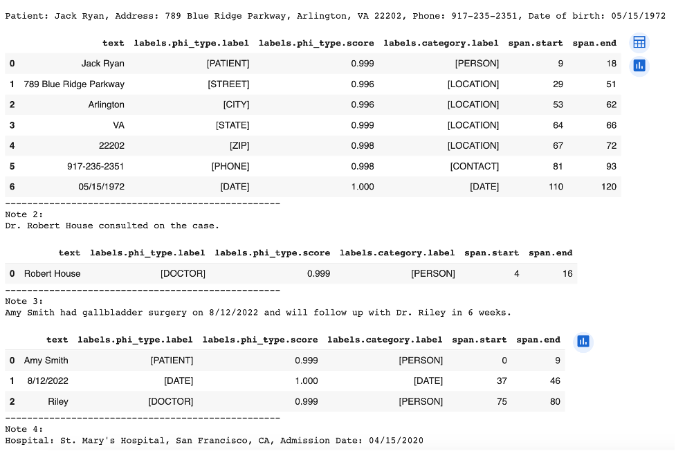
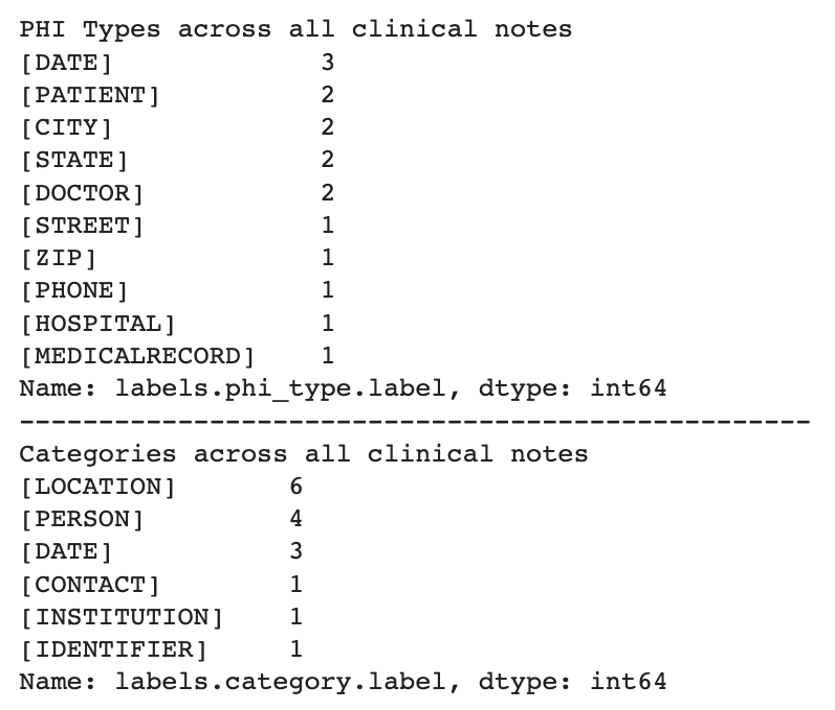

We can use the Identify PHI endpoint to identify PHI that we would like to aggregate, and then build a DataFrame to print each type of PHI (labeled as phi_type or category) and how often it was found. We can use this information to understand the frequency and types of PHI that appear in various conversations or documents.
Step 1: Install ScienceIO and Pandas
⚠️ Important: Make sure you are using the latest version of the SDK; the endpoint will not work on versions prior to 2.0.0. Use thepip install scienceio --upgrade command to upgrade.
Use this code if you do not have pandas and ScienceIO installed on your machine, or if you are starting a new Jupyter notebook. Otherwise, skip to Step 2.
# Install scienceio and pandas
pip install scienceio
pip install pandas
Step 2: Call the Identify PHI Endpoint
You will need to import and set up the ScienceIO library and pandas (under thepd alias) to successfully run the code. You can replace the strings in clinical_notes with your own strings, if desired.
# Import and set up required packages
from scienceio import ScienceIO
scio = ScienceIO()
import pandas as pd
# Provide the clinical notes with unredacted PHI
clinical_notes = [
"Patient: Jack Ryan, Address: 789 Blue Ridge Parkway, Arlington, VA 22202, Phone: 917-235-2351, Date of birth: 05/15/1972",
"Dr. Robert House consulted on the case.",
"Amy Smith had gallbladder surgery on 8/12/2022 and will follow up with Dr. Riley in 6 weeks.",
"Hospital: St. Mary's Hospital, San Francisco, CA, Admission Date: 04/15/2020",
"Medical Record Number: 311612351634, Diagnosis: Hypertension"
]
# Create an empty list
responses = []
# Call the identify_phi endpoint and append the list
for text in clinical_notes:
response = scio.identify_phi(text)
responses.append(response)
Step 3: Build the DataFrame
First, we’ll use thejson_normalize function to create a DataFrame with a tabular format. This function will loop to build multiple DataFrames containing the endpoint responses for each clinical note, and then will combine all of those separate DataFrames into a df_list variable.
# Use the json_normalize function to create multiple dfs with a tabular format
import pandas as pd
df_list = []
for idx, response in enumerate(responses):
df = pd.json_normalize(response['annotations'])
df_list.append(df)
# Build the df and view the results
for idx, response in enumerate(responses):
print(f"Note {idx + 1}:\n{clinical_notes[idx]}\n")
df = pd.json_normalize(response['annotations'])
display(df)
print("-" * 50)

Step 4: Aggregate and View Statistics
Finally, we’ll aggregate the statistics into a single DataFrame and print both thephi_type and category labels. This will show us the total count of each, found in all of the clinical notes.
# Aggregate statistics into a single df
combined_df = pd.concat(df_list)
# Print phi_type labels found:
print("PHI Types across all clinical notes")
print(combined_df["labels.phi_type.label"].value_counts())
print("-" * 50)
# Print category labels found:
print("Categories across all clinical notes")
print(combined_df["labels.category.label"].value_counts())
